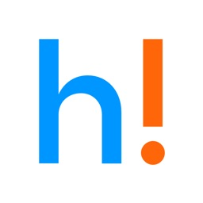
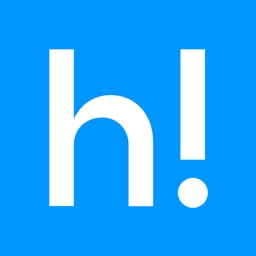
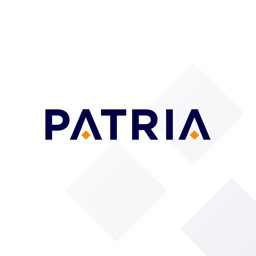
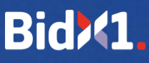

Osm let stavím iOS aplikace — 18 v produkci pro Heureku, ŠKODA AUTO, Tesco nebo
Patria Finance. Na většině projektů jako jediný iOS vývojář, posledních skoro pět let
jako garant iOS na Heurece: Swift 6, Kotlin Multiplatform a CI/CD s buildem zkráceným
ze 14 na 3 minuty.
Hledám iOS role v Praze i remote, včetně projektů s Kotlin Multiplatform.
Swift 6SwiftUIUIKitKotlin MultiplatformCLEAN · MVI
Vybrané projekty.
Aplikace, na kterých jsem pracoval jako iOS vývojář v týmech Heureka Group,
adastra.one a Unicorn a.s.


E-commerce · Heureka Group
Heureka.cz & Heureka.sk
08/2021 – 05/2026 · CLEAN, MVI + FlowController
Skoro 5 let iOS vývoje srovnávačů cen a nákupních rádců pro český
a slovenský trh — přes 55 tisíc e-shopů a miliony produktů k porovnání
i nákupu. Byl jsem jeden ze dvou kmenových iOS vývojářů, spolu s 2–3
vývojáři z agentury. Většinu featur jsme převedli do Kotlin Multiplatform —
sdílená je doménová a datová vrstva i část view modelů, UI zůstalo
v nativních technologiích SwiftUI, UIKit a Jetpack Compose.
Napojoval jsem iOS na sdílenou vrstvu, přepisoval části do sdíleného Kotlinu
a přispíval i do UI Androidu. Přechod na Swift 6 a strict concurrency byl
v mé režii. Převzal jsem iOS CI/CD a build server, několikrát je přestavěl
a build zkrátil ze 14 na 3 minuty.
Z jedné codebase vznikají čtyři aplikace — dva trhy, dvě platformy.
Aplikace šesti komerčních rozhlasových stanic — živé vysílání, novinky,
program a profily moderátorů. Zděděnou codebase jsem po analýze od základu
přepsal a postavil ji tak, aby z ní vznikalo všech šest aplikací, každá
s vlastním brandem, obsahem i částí funkcí. Celou šestici jsem dodal během pěti
měsíců, souběžně s dalšími projekty. Byl jsem jediný iOS vývojář projektu. Pracoval jsem v týmu
s grafikem a backend vývojářem.
Interaktivní vícestránkový formulář pro předávku vozu mezi distributorem
ŠKODA AUTO a zákazníkem — fotodokumentace, načtení údajů podle VIN a podpis
obou stran na displeji. Dodal jsem čtyři aplikace — edice FULL a LITE
ve verzích 2.2 a 3. Aplikace fungovaly i bez připojení, protože v místě
předávky často nebylo. Byl jsem jediný iOS vývojář projektu. Aplikace již
dnes nejsou v distribuci.
Swift 4/5
UIKit
Alamofire
XCTest

Fintech · Patria Finance
Patria MobileTrader
10/2018 – 04/2019 · Coordinator + MVVM
Obchodní aplikace pro klienty Patria Finance — portfolio, detaily
a grafy cenných papírů, zadávání pokynů, cenové alerty a historie
transakcí. Byl jsem jediný iOS vývojář projektu. Spolupracoval jsem
s vlastníkem produktu.
Věrnostní aplikace prodejen Travel FREE — digitální CLUBCARD s přehledem
nasbíraných bodů a kuponů, blokace i výměna karty přímo z telefonu, přehled
sortimentu a mapa poboček s otevírací dobou a kontakty. Jako jediný iOS
vývojář jsem se staral o údržbu a rozvoj aplikace. Spolupracoval jsem
s vlastníkem produktu.
Oficiální aplikace Českého florbalu — výsledky, program a statistiky
ze všech ligových i pohárových soutěží svazu včetně reprezentace, profily
týmů, hráčů i rozhodčích a videa z ceskyflorbal.tv. Jako jediný iOS
vývojář jsem udržoval aplikaci a přidával nové featury. Pracoval jsem
v týmu s grafikem a backend vývojářem. Aplikace díky CoreData poskytuje
výsledky a statistiky i offline. Přihlášený uživatel si volí oblíbené
soutěže, týmy a hráče a dostává k nim push notifikace. Verze, na které
jsem pracoval, už není v distribuci.
Zákaznická aplikace Tesco pro malajsijský trh — nákup potravin
s procházením kategorií, vyhledáváním s filtry, oblíbenými produkty
a akčními nabídkami. K tomu rezervace času doručení domů i vyzvednutí
na prodejně a úpravy objednávky až do uzávěrky. Jako jediný iOS vývojář
jsem udržoval zděděnou Objective-C codebase s UI v XIBech, přidával nové
featury a vydával všechny verze —
průběžně po celou dobu v adastře, souběžně s dalšími projekty. Pracoval jsem v týmu s grafikem
a backend vývojářem. Aplikace již dnes není v distribuci.
Sesterská aplikace k malajsijskému Tescu, postavená pro thajský trh —
stejný nákupní model od katalogu po rezervaci času doručení, ale vlastní
codebase. Obě aplikace sdílely technologický základ, ne kód. Přihlašovalo
se skenem čárového kódu, košík a platba běžely ve webview. Jako jediný
iOS vývojář jsem udržoval zděděnou Objective-C codebase s UI v XIBech,
přidával nové featury a vydával všechny verze —
průběžně po celou dobu v adastře, souběžně s dalšími projekty. Pracoval jsem v týmu
s grafikem a backend vývojářem. Aplikace již dnes není v distribuci.
Objective-C
UIKit
AFNetworking
JWT
RNCryptor
CocoaPods
Firebase
AppCenter
XCTest
Interní nástroj · Tesco
Tesco ATC
10/2018 – 04/2019 · Coordinator + MVVM
Interní aplikace pro zaměstnance poboček Tesca — naplánované směny
a stav docházky přihlášeného zaměstnance. Lokalizovaná do čtyř jazyků
pro Polsko, Česko, Slovensko a Maďarsko a distribuovaná přes Enterprise
certifikát mimo App Store. Byl jsem jediný iOS vývojář projektu.
Spolupracoval jsem s vlastníkem produktu.
Swift 4/5
UIKit
Alamofire
Firebase
CocoaPods
XCTest

PropTech · BidX1 Technology
BidX1
09/2019 – 11/2019 · MVVM
MVP digitálního tržiště s nemovitostmi — online aukce a správa nabídek
s řazením podle lokalit: Jižní Afrika, Irsko, Spojené království a Kypr.
Byl jsem jediný iOS vývojář projektu. Pracoval jsem v týmu s grafikem
a backend vývojářem. Rozhodnutím majitele se aplikace nikdy nedostala
do produkce.
Swift 5
Combine
Moya
XCTest
Doprava · Freelance
Dopravní aplikace
04/2018 – 09/2018 · MVVM
MVP pro sledování pražské integrované dopravy — seznam nejbližších
spojů z pěti nejbližších zastávek, polohu určovaly Apple Watch. Hodinková
část zobrazovala spoje z nejbližší nebo vybrané zastávky. Dělal jsem
grafický návrh i implementaci, data dodával backend z veřejně dostupných
zdrojů. Kvůli obtížné dostupnosti dat zůstal projekt v šuplíku.
Swift 4
watchOS
UIKit
URLSession
XCTest
Zkušenosti.
06/2026 → dnes
iOS Developer · Vlastní aplikace
Praha
Pracuju na několika vlastních aplikacích pro iPhone a Apple Watch — od nápadu a návrhu
přes architekturu po vydání. Tam, kde to dává smysl,
sdílím doménovou a datovou vrstvu přes Kotlin Multiplatform. Aplikace jsou teď v uzavřeném beta testu.
Swift 6
SwiftUI
Observation
Swift Concurrency
Swift Testing
SwiftData
CoreData
MapKit
WidgetKit
SPM
Firebase
Kotlin Multiplatform
Koin
Ktor
08/2021 → 05/2026
iOS Developer · Heureka Group
Praha · 4 roky 9 měsíců
Garant iOS aplikací Heureka.cz a Heureka.sk, jeden ze dvou kmenových iOS
vývojářů. Swift 6, CLEAN + MVI, Kotlin Multiplatform, iOS CI/CD a build server —
build ze 14 na 3 minuty.
Swift 6
Swift Concurrency
SwiftUI
UIKit
Observation
Combine
Apollo/GraphQL
Kotlin Multiplatform
Jetpack Compose
Koin
Ktor
SPM
Factory
Firebase
GitLab CI
Fastlane
XCTest
05/2019 → 07/2021
iOS Developer · adastra.one
Praha · 2 roky 3 měsíce
Jako jediný iOS vývojář jsem převzal a dál rozvíjel Tesco Online Malaysia
a Tesco Lotus Thailand ve zděděném Objective-C nad MVC, Český florbal a šest
rozhlasových stanic ve Swiftu 5 nad Coordinator + MVVM — rádia jsem po analýze
od základu přepsal do jedné codebase. BidX1 jsem postavil od nuly jako MVP
nad MVVM.
Swift 5
Objective-C
UIKit
Combine
CoreData
Moya
Alamofire
AFNetworking
AVAudioRecorder
Firebase
CocoaPods
Fastlane
XCTest
10/2018 → 04/2019
iOS Developer · Unicorn a.s.
Praha · 7 měsíců
Jako jediný iOS vývojář jsem dodával aplikace pro ŠKODA AUTO, Patria
Finance a Travel FREE a interní Tesco ATC pro pobočky v regionu PL/CZ/SK/HU,
distribuovaný přes Enterprise certifikát. Ve Swiftu 4 nad Coordinator
+ MVVM, na konci s migrací na Swift 5.
Swift 4/5
UIKit
Alamofire
Firebase
CocoaPods
XCTest
04/2018 → 09/2018
iOS & watchOS Developer · Freelance
Praha · 6 měsíců
Dopravní aplikace pro iOS a watchOS — první samostatný projekt
po přechodu k vývoji.
Swift 4
iOS
watchOS
UIKit
URLSession
XCTest
Před iOS: 16 let grafiky, eventů a obchodu
Freelance grafik (2004 → 2016) — vedlejší činnost: vizuály a promo
materiály pro hudební akce. Photoshop, Illustrator, Affinity Designer.
Event manager, freelance (2000 → 2013) — vedlejší činnost: pořádání
hudebních večerů a festivalů s českými i zahraničními umělci.
Majitel a manager, Sensation Factory iRadio (2010 → 2014) —
vedlejší činnost při zaměstnání: vedení týmu a provozu internetového rádia,
jednání s dodavateli obsahu.
Project purchaser, BRK - stavební (2015) — příprava
a nákup při realizaci rezidenčního projektu o 33 bytových jednotkách.
Trade officer, HOCHTIEF CZ (2006 → 2013) — rozpočty
a kompletace nabídek do velkých státních stavebních zakázek.
Trade officer, AQUATEST (2004 → 2006) — příprava
a koordinace nabídek do velkých státních ekologických zakázek.
Tech stack.
Jazyky & platformy
Swift 6
Swift Concurrency
Swift 5
Swift 4
Kotlin Multiplatform
Kotlin
iOS
watchOS
Objective-C
Architektura
CLEAN
MVI + FlowController
Coordinator + MVVM
MVP
Factory (DI)
Koin (DI)
MVC
UI & frameworky
SwiftUI
UIKit
Jetpack Compose
Observation
Combine
MapKit
WidgetKit
AVAudioRecorder
Moko-resources
XIB
Data & síť
Apollo/GraphQL
Ktor
URLSession
Alamofire
SwiftData
CoreData
JWT
Moya
RNCryptor
AFNetworking
Nástroje & CI
GitLab CI
Fastlane
Claude Code
XCTest
Swift Testing
TestFlight
SPM
Shell skripty
Pulse
AppCenter
CocoaPods
Git
Analytika & nástroje
Firebase
AppsFlyer
Meiro
Didomi
Figma
Affinity Designer
Illustrator
Photoshop
Jira
Poeditor
O mně.
K iOS vývoji jsem se dostal oklikou. Šestnáct let jsem dělal grafiku,
pořádal hudební akce a připravoval nabídky do velkých státních zakázek — pak jsem si
v roce 2018 dodělal bakaláře na Unicorn College a začal programovat
naplno. Ta cesta se pořád vyplácí: vím, jak vypadá projekt z druhé
strany stolu, a s designérem i produkťákem si rozumím.
Dnes mě kromě programování baví i architektura, která drží pohromadě
i po letech. Rád zkoumám sdílení logiky mezi iOS a Androidem přes
Kotlin Multiplatform nebo si hraji s AI. Píšu testovatelný kód
a automatizuju to, co bych jinak dělal podruhé ručně.
Kontakt
Ozvěte se.
Hledám iOS role v Praze i remote, včetně projektů s Kotlin Multiplatform.
Ozvěte se, rád si popovídám o projektu.